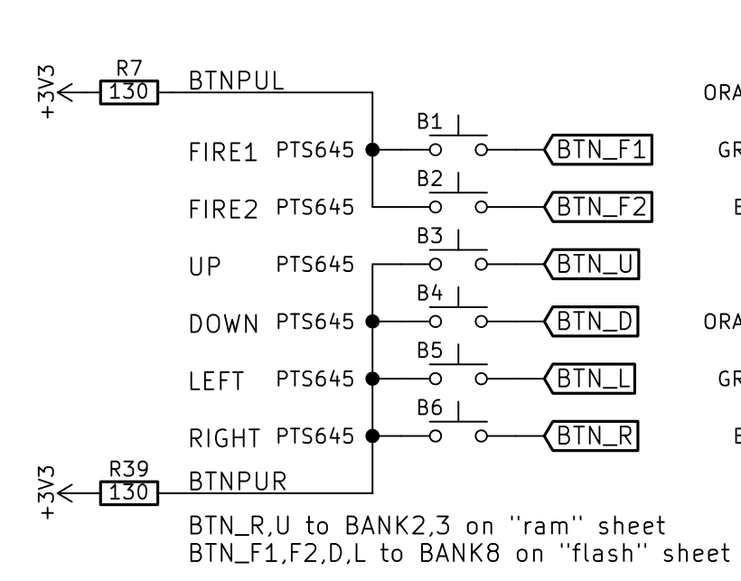
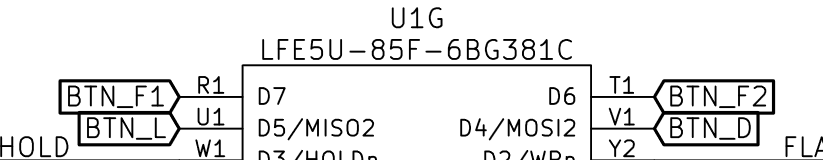
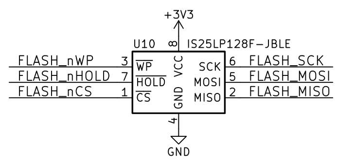
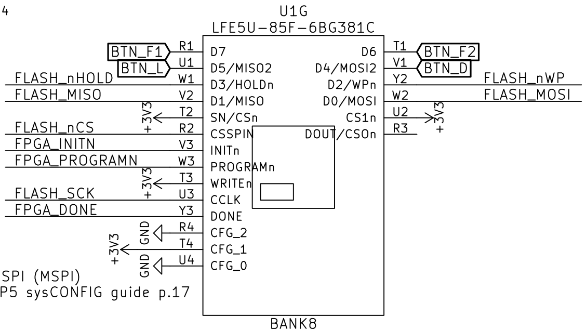

The first and foremost thing you should do when trying to design any kind of system, not only for FPGAs, but in general, is to identify the datasheets or specifications of your design. We'll skip the process of implementing the FPGA into a development board, since that is not of interest, and be focusing on the important parts:
Identifying dedicated mapped peripherals: This refers to understanding what external buses have been exposed by the devboard manufacturers, whether it be SPI, I^2, UART etc. You'll say "but, wait, we're talking about FPGAs here, they're by nature fully reprogrammable, we can have whatever bus we want, why should we care?". Because some development boards, like the ULX3S, have other supporting components, for example ADCs or parallel RAM modules, which are hardwired by PCB traces to the FPGA.
Identifying components attached to the FPGA: This refers to anything not connected with a bus. LEDs, buttons, potentiometers, any kind of component that has pins connected via PCB traces, but don't have the overhead of buses.
Identifying critical components: Mapped reset pins / buttons, crystal oscillators used as main clock sources, etc.
Creating a pin-map table that maps pin function to FPGA pin
Example
Identifying dedicated mapped peripherals: The first place to look is the development board's datasheet. If you don't have an explicit datasheet (like in the case of the ULX3S), you can use the manufacturer's website or product listing. Taking a look here reveals a comprehensive list of peripherals:
Peripheral
Component used for implementation
USB
FTDI FT231XS
RAM
Part number seems to differ, my board has an ISSI IS42S16160G-7TL
Flash
IS25LP128F
ADC
MAX11125
... And so on. Our goal here is not to list a full datasheet, but to highlight the working principle. Once this
Peripheral
Communication BUS
USB
Serial (RX/TX)
RAM
16-bit parallel bus
Flash
SPI
ADC
I^2C
Identifying components attached to the FPGA:
Component
Number of placed parts
Buttons
7
LEDs
11
Identifying critical components:
Component
Number of placed parts
24 MHz crystal
1
32 KHz crystal
1
Power button
1
Creating a pin-map table that maps pin function to FPGA pin: This is done by analyzing the schematics of the board that you are designing for. I've linked here the schematic for the board I own. As an example, I will be mapping the pins for the buttons, LEDs, and the flash chip.  Fig.1: Buttons and their netflags in the datasheet  Fig.2: Connections to FPGA of 3 buttons  Fig.3: Flash chip  Fig.4: Connections of the flash pin to the FPGA
Bus (if any)
Pin function
Mapped pin location
Notes
-
Fire button 1
D7
Pull-up
-
Fire button 2
D6
Pull-up
-
UP button
R18
Pull-up
-
DOWN button
V1
Pull-up
-
LEFT button
U1
Pull-up
-
RIGHT button
H16
Pull-up
-
LED 0
B2
-
-
LED 1
C2
-
-
LED 2
C1
-
-
LED 3
D2
-
-
LED 4
D1
-
-
LED 5
E2
-
-
LED 6
E1
-
-
LED 7
H3
-
SPI
SCK
U3
Flash SPI
SPI
MISO
V2
Flash SPI
...
...
...
...
Armed with this knowledge, we may proceed to the programming part.